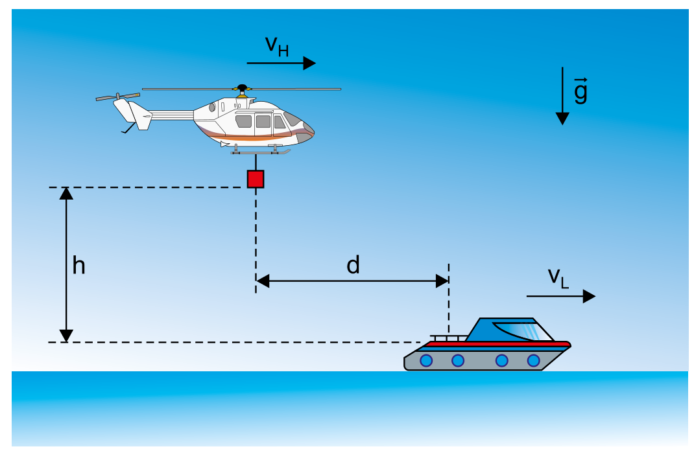
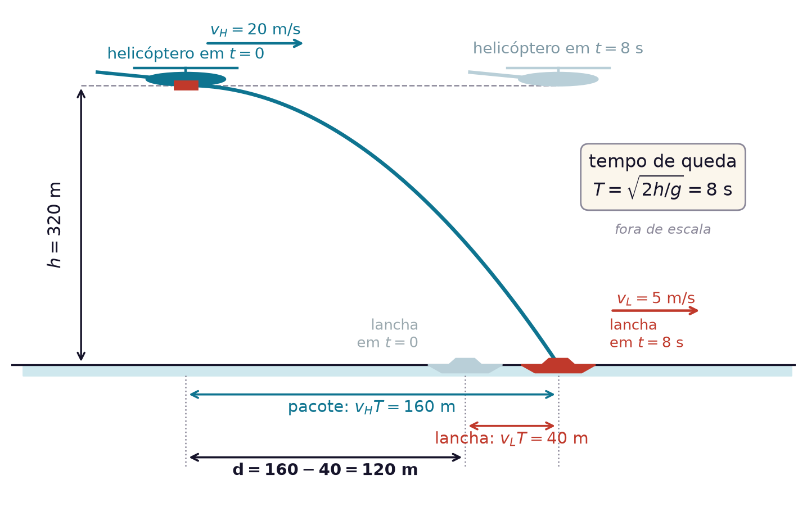

Questão 76
Cinemática · lançamento horizontal e movimento relativoUm helicóptero sobrevoa horizontalmente um lago, em linha reta, com velocidade escalar constante vH = 20 m/s e, desse helicóptero, um pacote será abandonado de uma altura h = 320 m. Uma lancha navega nas águas desse lago, também com velocidade escalar constante vL = 5 m/s, em linha reta, na mesma direção e no mesmo sentido da velocidade do helicóptero. As trajetórias do helicóptero e da lancha estão contidas em um mesmo plano vertical.

Desprezando a resistência do ar e adotando g = 10 m/s², para que o pacote caia dentro da lancha, ele deve ser abandonado quando o helicóptero estiver, atrás da lancha, a uma distância horizontal d correspondente a
Ver resolução
Dados e o que se pede.
Ideia-chave. O pacote sai com a velocidade do helicóptero. Sem resistência do ar, na horizontal ele mantém vH (movimento uniforme) e na vertical cai em queda livre a partir do repouso. Os dois movimentos são independentes e duram o mesmo tempo.
1. Tempo de queda (só depende de h):
2. Velocidade relativa. Na horizontal, o pacote (que acompanha o helicóptero) se move a 20 m/s e a lancha, no mesmo sentido, a 5 m/s. Do ponto de vista da lancha, o pacote se aproxima a:
Para cair dentro da lancha, essa aproximação precisa fechar exatamente a distância horizontal inicial d durante o tempo de queda:

Armadilhas. Usar vHT = 160 m (alternativa A) esquece que a lancha também avança. Somar as velocidades (25·8 = 200 m, alternativa E) só valeria se a lancha viesse em sentido contrário; aqui o sentido é o mesmo, então as velocidades se subtraem.
Resposta: alternativa D